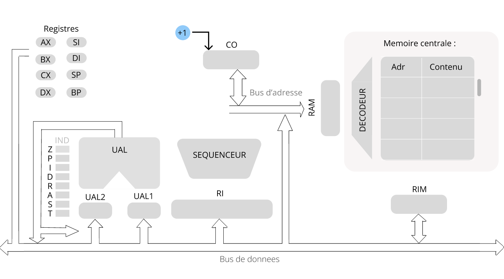

Présentation de la machine
Architecture de la machine
L'architecture de la machine de l'assembleur étant assez proche du 80x86, elle présente plusieurs similitudes avec la manière dont le 8086 traite les instructions et les données. Voici une brève description des principaux éléments de l'architecture de la machine :
 Registres : La machine dispose d'un certain nombre de registres intégrés qui sont utilisés pour stocker des données temporaires ou des adresses de mémoire et ceci est pour optimiser les accès mémoires. Les registres les plus couramment utilisés sont les registres généraux, tels que AX, BX, CX et DX, ainsi que les registres d'index et de pointeur, tels que SI, DI, BP et SP.
Registres : La machine dispose d'un certain nombre de registres intégrés qui sont utilisés pour stocker des données temporaires ou des adresses de mémoire et ceci est pour optimiser les accès mémoires. Les registres les plus couramment utilisés sont les registres généraux, tels que AX, BX, CX et DX, ainsi que les registres d'index et de pointeur, tels que SI, DI, BP et SP.- Unité arithmétique et logique (UAL) : L'UAL est responsable de l'exécution des opérations arithmétiques et logiques, telles que l'addition, la soustraction, la multiplication, la division, les opérations bit à bit, etc. Elle utilise les données stockées dans les registres pour effectuer ces opérations.
- Unité de contrôle : L'unité de contrôle est responsable de la récupération des instructions du programme et de la coordination de l'exécution des instructions par les différentes parties du processeur.
- Mémoire : La mémoire est l'endroit où les programmes et les données sont stockés. Elle est de 2048 mots, 16 bits chacun.
- Bus de données : Le bus de données est le canal de communication qui permet à différentes parties du processeur et de la carte mère de communiquer entre elles. Il est utilisé pour transférer des données entre les registres, la mémoire et les périphériques d'entrée/sortie. Il est de 16 bits
- Bus de d'adresses : Le bus d'adresse représente aussi un canal de communication qui permet à différentes parties du processeur et de la carte mère de communiquer entre elles. Il est utilisé pour transférer des adresses entre les registres et la mémoire. Il est de 16 bits
| Bits | 7 | 6 | 5 | 4 | 3 | 2 | 1 | 0 | |
| 1ere octet | COP | D | W=1 | Le code d'operation | |||||
| 2eme octet | MOD | REG | R/M | Le mode d'adressage | |||||
cette dicomposition du RI Utilisé par ces Formats :
INST Reg,Reg/Mem
INST Reg/Mem,Reg
| Bits | 7 | 6 | 5 | 4 | 3 | 2 | 1 | 0 | |
| 1ere octet | COP | D | W=1 | Le code d'operation | |||||
| 2eme octet | MOD | Not used | R/M | Le mode d'adressage | |||||
cette dicomposition du RI Utilisé par ces Formats :
INST Reg/Mem,Immediate
INST Reg/Mem
INST Reg/Mem,CX
| Bits | 7 | 6 | 5 | 4 | 3 | 2 | 1 | 0 | |
| 1ere octet | COP | REG | Le code d'operation | ||||||
cette dicomposition du RI Utilisé par ces Formats :
INST Reg
INST Reg,Immediate
INST AX,Reg
Notre architecture permet l'exécution de 14 formats qui sont :
INST Reg,Reg/Mem
INST Reg/Mem,Reg
INST Reg/Mem,Immediate
INST Reg/Mem
INST Reg/Mem,CX
INST Reg
INST Reg,Immediate
INST AX,Reg
INST Mem
INST AX,DX
INST DX,AX
INST DX,Mem
INST Mem,DX
INST AX,immediate